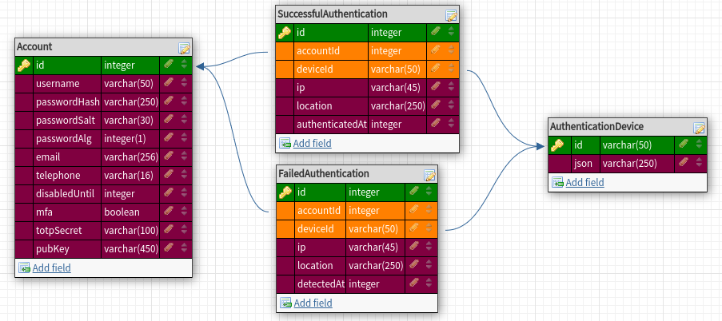

@thermopylae/core.authentication
@thermopylae/core.authentication


Implementations of repositories required by Authentication Library.
Install
npm install @thermopylae/core.authentication
Prerequisites
Before being able to use this package you need to take following actions:
Redis 6 and MySQL 8 deployments
Create MySQL database having the following minimal schema:
 [Here][test-fixtures-sql-schema] is an example of MySQL code in order to setup this schema.Configure core logging. Example:
import { DefaultFormatters, LoggerInstance, OutputFormat } from '@thermopylae/core.logger';
LoggerInstance.formatting.setDefaultRecipe(OutputFormat.PRINTF, {
colorize: true,
skippedFormatters: new Set([DefaultFormatters.TIMESTAMP]),
levelForLabel: {
[ClientModule.MYSQL]: 'info',
[ClientModule.REDIS]: 'info'
}
});
LoggerInstance.console.createTransport({ level: 'info' });
- Enable loggers of database clients. Example:
import { initLogger as initMySqlLogger } from '@thermopylae/core.mysql';
import { initLogger as initRedisClientLogger } from '@thermopylae/core.redis';
initMySqlLogger();
initRedisClientLogger();
- Init database clients. Example:
import { MySqlClientInstance } from '@thermopylae/core.mysql';
import { ConnectionType, DebuggableEventType, RedisClientInstance } from '@thermopylae/core.redis';
MySqlClientInstance.init({
pool: {
host: '127.0.0.1',
port: 3306,
user: 'your-user',
password: 'your-password',
database: 'your-database'
}
});
await RedisClientInstance.connect({
[ConnectionType.REGULAR]: {
host: '127.0.0.1',
port: 3306,
password: 'your-password',
connect_timeout: 10_000,
max_attempts: 10,
retry_max_delay: 5_000,
attachDebugListeners: new Set<DebuggableEventType>(['end', 'reconnecting'])
}
});
Description
This package contains implementations of the repositories required by @thermopylae/lib.authentication. You can create instances of these repositories and pass them as config to @thermopylae/lib.authentication.
Repositories are grouped in two categories:
- mysql - these repositories use MySQL database as underlying storage
- redis - these repositories use Redis database as underlying storage
Usage
Bellow is an example of how the repositories implementations from this package can be used in order to instantiate AuthenticationEngine. @FIXME LINK
import { AccountWithTotpSecret, AuthenticationEngine } from '@thermopylae/lib.authentication';
import {
AccountMySqlRepository,
FailedAuthenticationsMysqlRepository,
SuccessfulAuthenticationsMysqlRepository,
ActivateAccountSessionRedisRepository,
AuthenticationSessionRedisRepository,
FailedAuthenticationAttemptsSessionRedisRepository,
ForgotPasswordSessionRedisRepository
} from '@thermopylae/core.authentication';
// setup decribed above in `Prerequisites` chapter
const AUTHENTICATION_ENGINE = new AuthenticationEngine<AccountWithTotpSecret>({
// config params...
repositories: {
account: new AccountMySqlRepository(),
successfulAuthentications: new SuccessfulAuthenticationsMysqlRepository(),
failedAuthenticationAttempts: new FailedAuthenticationsMysqlRepository(),
authenticationSession: new AuthenticationSessionRedisRepository('actv-acc'),
failedAuthAttemptSession: new FailedAuthenticationAttemptsSessionRedisRepository('fail-auth'),
forgotPasswordSession: new ForgotPasswordSessionRedisRepository('fgt-pwd'),
activateAccountSession: new ActivateAccountSessionRedisRepository('actv-acc')
}
});
// use authentication engine
AUTHENTICATION_ENGINE.enableAccount('acount-id');
API Reference
API documentation is available here.
It can also be generated by issuing the following commands:
git clone git@github.com:marinrusu1997/thermopylae.git
cd thermopylae
yarn install
yarn workspace @thermopylae/core.authentication run doc
Author
👤 Rusu Marin
- GitHub: @marinrusu1997
- Email: dimarusu2000@gmail.com
- LinkedIn: @marinrusu1997
📝 License
Copyright © 2021 Rusu Marin.
This project is MIT licensed.